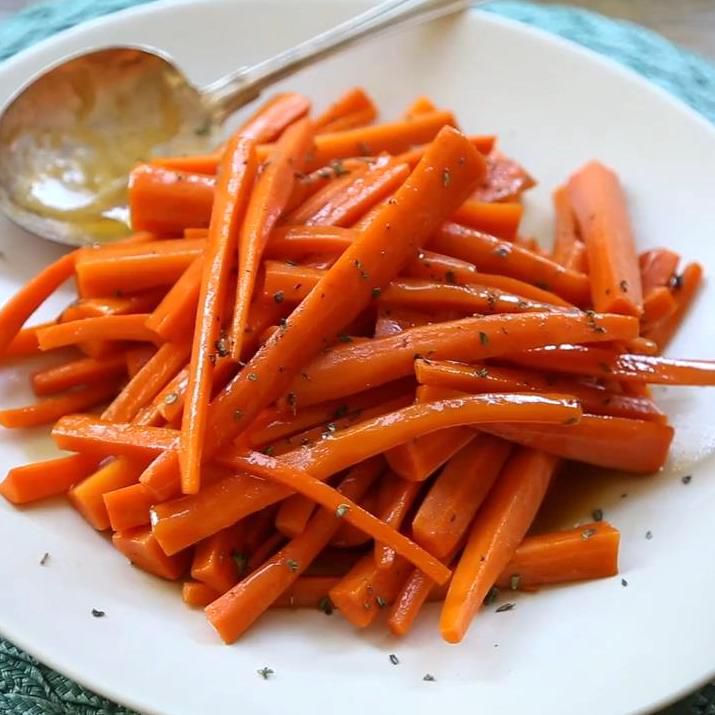
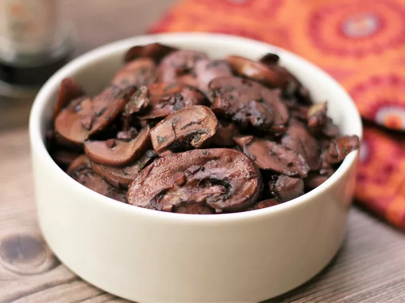

Lasagna
Layers of pasta, rich sauce, and cheese create comforting lasagna.
Glazed carrots
Honey-glazed carrots offer a sweet twist to classic vegetable sides.
Garlic mushrooms
Sauté garlic mushrooms in butter for a savory, aromatic delicacy.
Indulge in culinary delights with our curated recipes! Explore mouthwatering lasagna layers, savor the rich aroma of garlic-infused mushrooms, and delight in the sweet glaze of honey-glazed carrots. Elevate your home-cooking experience with these easy-to-follow, delicious recipes.